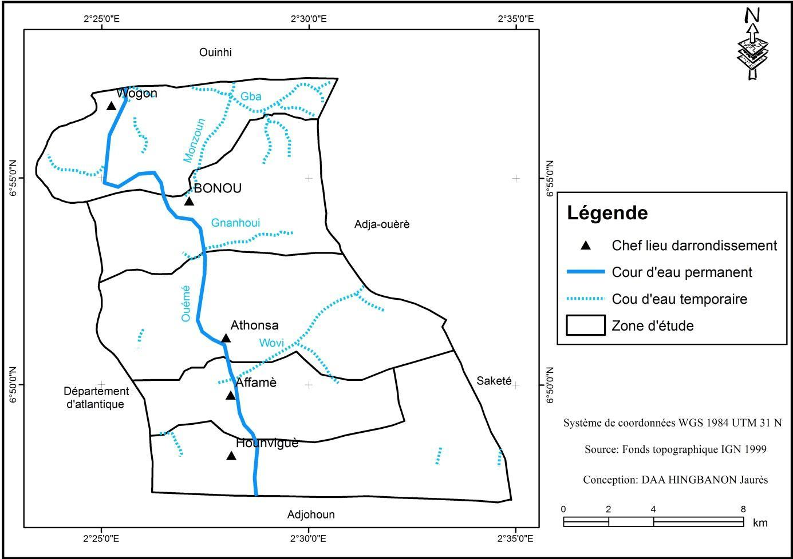
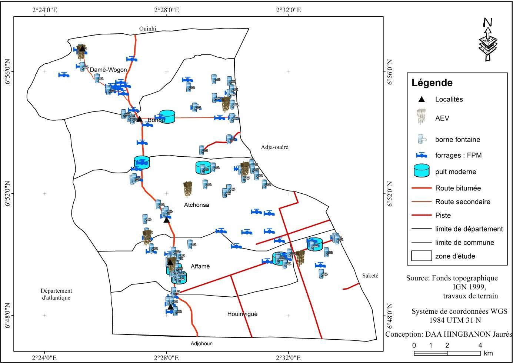
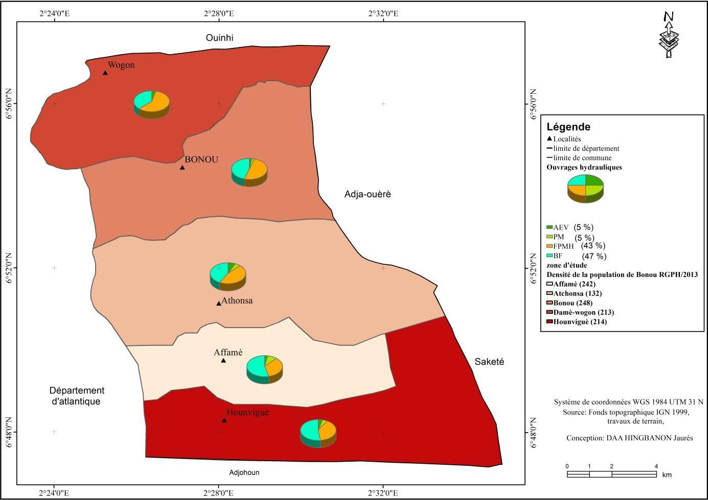
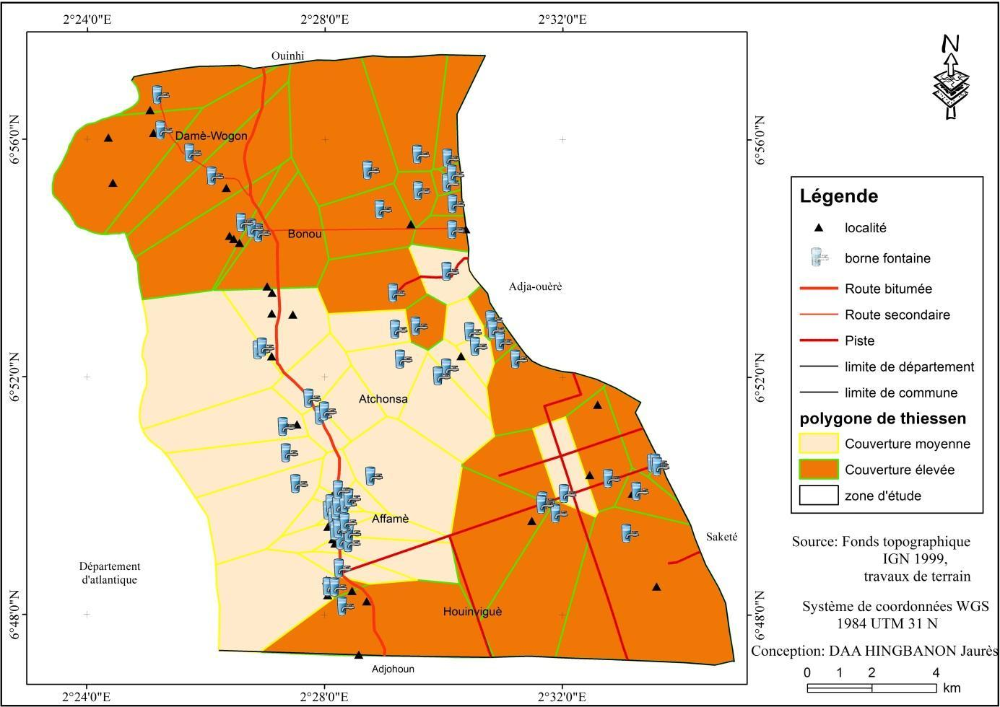

Géographie et Aménagement du Territoire · Université d'Abomey-Calavi (Bénin) · Mémoire de Licence en Géographie, 2018
Cartographie et analyse spatiale des infrastructures hydrauliques
Répartition spatiale des ouvrages d'eau dans la Commune de Bonou (Bénin)
Contexte et objectif
Dans la Commune de Bonou, au Bénin, la mauvaise répartition des infrastructures hydrauliques, aggravée par les pannes fréquentes de certains ouvrages, complique l'accès à l'eau potable et pousse une partie de la population vers des sources d'eau de qualité douteuse, à l'origine de nombreuses maladies hydriques. L'objectif de cette étude est d'analyser la répartition spatiale des infrastructures hydrauliques de la commune : répertorier les types d'ouvrages disponibles, cartographier leur répartition et analyser leurs modes de gestion.

Démarche et outils
Les données mobilisées combinent le fond topographique IGN (1999), des données démographiques (INSAE) et les coordonnées géographiques des ouvrages hydrauliques relevées au GPS Garmin 76 CSx lors d'enquêtes de terrain menées auprès de 124 ménages et 12 acteurs spécifiques (chef du service technique, chefs de village, agent de l'hydraulique, membres des comités de gestion) dans les cinq arrondissements de la commune. Les coordonnées des ouvrages ont ensuite été projetées et cartographiées sous ArcGIS 10.3.1. Pour évaluer la couverture spatiale de chaque type d'infrastructure au regard de la norme de la Direction Générale de l'Hydraulique (1 point d'eau pour 250 habitants dans un rayon de 1 000 m), un polygone de Thiessen a été généré autour de chaque ouvrage, délimitant ainsi les zones bien couvertes et les secteurs délaissés.



Résultats
L'enquête a permis de recenser quatre types d'infrastructures hydrauliques dans la Commune de Bonou : 65 bornes fontaines (47 %) alimentées par 7 adductions d'eau villageoise, 60 forages à pompe à motricité humaine (43 %) et 7 puits modernes (5 %). Ces ouvrages sont concentrés dans les arrondissements de Bonou, d'Atchonsa et d'Affamè, tandis que Damè-Wogon et Hounviguè restent plus faiblement couverts, en partie à cause du fleuve Ouémé et de ses marécages. L'analyse par polygones de Thiessen confirme une couverture inégale, ne respectant pas toujours la norme d'un point d'eau pour 250 habitants dans un rayon de 1 000 m, avec certains secteurs bien desservis et d'autres délaissés. Sur le plan de la gestion, deux modes coexistent dans la commune — la gestion déléguée pour les ouvrages simples (forages) et la gestion par affermage pour les ouvrages complexes (adductions d'eau villageoise, confiées à l'ONG LIBACEL) — mais tous deux souffrent de faiblesses organisationnelles (comités de gestion incomplets, absence de suivi) qui fragilisent l'entretien et la durabilité des ouvrages. L'étude conclut à la nécessité d'un véritable système d'information géographique pour orienter les futures implantations et améliorer durablement l'accès à l'eau potable dans la commune.